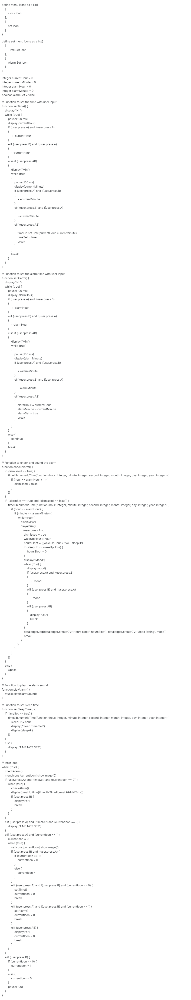
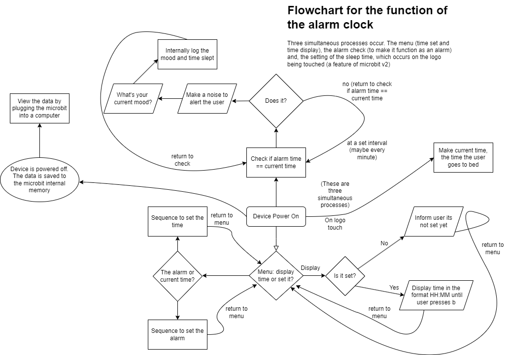
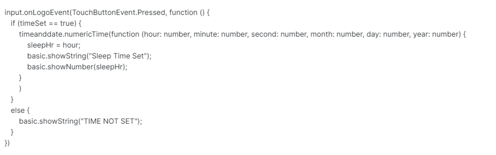

Upon reading the brief I considered three primary ideas on the topic of wellbeing. The first was a step counter (pedometer) using the microbit's built in accelerometer. The second a solution for tracking the medication the user was to take and the third (the one I ultimately decided on) a smart alarm clock that could track the users sleep patterns, the resulting mood, and, of course, keep track of time. I decided against the step counter as I didn't believe there was enough in that idea to investigate, the medication tracker I discarded as it was unlikely to be relevant to many of my classmates (who I planned to survey to gather insight into their needs).
So, with my idea chosen, I began researching existing solutions as well as the scientific research around sleep (which I'll discuss at the end, after this more technical section). The most prolific example is the apple watch. This is smart watch which does many things (including all three of my ideas). It's strengths are it's ease of use, icon based design, and versatility. Then I found a solution using an arduino with built in WiFi, but this is programmed in a different programming language than I was used to and I feared if I went this route, the project would be overly complex and hard to use for the average user. I researched if there was a way to to have WiFi on the microbit, the advantage of this approach would be that the time would be automatically updated and the data could be uploaded to the internet. I did a survey with my class which addresses some of these issues:
Survey Results:
What is most important to you:
1. Ease of use or 2. Functionality
70% ease of use, 20% functionality, 10% didn't answer
Would you prefer your data on the cloud or locally?
1. Cloud or 2. Locally
50% cloud, 50% locally
Would you be interested in a device to improve your quality of sleep and mood?
1. Yes or 2. No
90% yes, 10% no
I investigated several other ideas to deal with the data displaying part of the project. One was WebUSB which would mean I could interact directly with a webpage to display the data from the microbit. This, however, would be far too dificult to implement and would not be easy for the user. I also researched a similar solution for the arduino I looked at previously. I remembered using the microbit's datalogging function, which we used in class, to store the data and display it to the user. Unlike the WiFi centered approach, this would not require extra hardware (such as the IOT bit, for wifi capabilities, for the microbit or a new arduino) and would mean the project could be used without internet access. I favoured this approach.
In terms of the scientific research, I found a study on dawn simulation. It concluded that light dawn simulation could be used as a treatment for depression. I decided against investigating this with my project, as I purely wanted to investigate the link between sleep amount and mood. I also found a study linking exercise and sleep quality, I decided to investigate this in the accompanying python data analysis section. Furthermore, I found a study positively linking mood and sleep, which was already my hypothesis. I decided that this was a worth while project which would help the wellbeing of the user and give them insights into their health.
It took several iterations of the projec to reach the final design. Initially, I tried a hardware extension (the IOT:bit), which would allow me to use WiFi, however for the reasons mentioned previously, I discarded this. And so, I tried again but this time I felt there was too much reliance on text. This was infuriating for the user, as the microbit scrolled text extremely slowly. Making everything take significantly longer than it had to. So from what I had seen from the apple watch, I decided to use an icon based approach.
So now my plan was this: an icon-based menu where the user can choose to either display the time, or set it. If the user chooses to display the time, the time will run accross the screen until the user exits. If they choose to set the time, they can choose to set either the current time and their alarm time. After the time has been set, the user experience is like this: Step 1. The user presses the logo of the microbit, this sets the current time as their sleep time. Step 2. The alarm goes off. Once dismissed, the user enters their current mood. Step 3. The microbit saves the time slept (calculated from sleep time to dismissal) and the mood to the internal memory. Step 4. After however many nights, the microbit can be plugged into a computer and the data analysed.
I then created a flowchart and drew up a draft of pseudocode, which you can view below. The important part is that there is a main loop which calls a function that checks if the alarm should go off, if it should it does. Then, if it's not time for the alarm, it will check if the user wants to select an icon or switch to the next. The first icon is a clock. When selected, the user can view the time. The alarm check function is still called, so if the user wishes they can stay on this screen for the duration of their use. The other icon is for setting the alarm time and current time. Each one of the routines to set the time and alarm are defined as functions.
I think the design I went with is a significant improvement on the others I tried and leads to the easiest and most useful user experience.
Pseudocode
Flowchart
Week 1
Tried to come up with list of ideas. Pedometer, alarm clock with sleep tracking, pill tracking. Decided on the smart alarm clock idea
Week 2
Researched different solutions. The apple watch, echo dot, other smart alarm clock solutions
Found a study on emulating a sunrise with light for waking, researched the kitronick zip halo light ring to see if i could implement this
Considered using the arduino for this project, researched the arduino uno
Looked into microbit wifi options. Found the IOT bit expansion board.
Carried out my survey to see what to focus on
Week 3
Discarded idea of using arduino (used a different programming language than I was used to and would add unnecesary cost)
Started on first draft on the code, using the block code editor to approximate what I needed. Unfortunately couldn't figure out a way to set the time easily and display it.
Found the time and date extension for the microbit. Messed around and was able to get a simple clock with an alarm.
Fixed a problem with the alarm where it would sound twice a day (I was using 12 hour time and so it was matching 6 (by which i meant 6 am as an example) with 6pm. Switched to 24hr)
Week 4
Set up thingspeak account for use with the IOT bit
Started using the IOT bit. Was able to get it connected to wifi without too many problems but was only able to update the online thingspeak data once per power on of the device and also couldn't download any data. Which means I'll have to figure out a new way to set the time (probably manually by the user).
Week 5
Using the zip halo was possible and I got it working but I thought it wasn't necessary and would mess up the data because I purely want to investigate the link between mood and sleep time.
Tried to use less text in my prototype because the scrolling was annoying
Decided the IOT bit was probably more effort than it was worth as the inbuilt datalogger also provided graphical data displaying and the ability to download the data as csv for analysis.
Researched the datalogging function to refresh my memory.
Week 6
Switched to javascript from the blocks of the prototype, which introduced several errors. Had to refresh on my javascript syntax. In particular I missed several semicolons.
Made a new prototype which had all the main functionality including datalogging.
Fixed a problem with the datalogging where it was saving an extra column. I was initialising an extra one at the beginning of the program and not filling it with anything.
Started working on the write-up, finding a way to make a flowchart and writing a draft for the first section
Week 7
Decided to scrap the current prototype and start fresh with a new approach using icons to replace the text using the inbuilt images function.
Found a study on a link between exercise and sleep quality which I might want to implement in some way.
Fixed a problem with the code where the loop, of the alarm function, would repeat when I didn't want it to. The break; functions were misplaced.
Week 8
Made the flowchart using what I had learned in week 6
Also made the pseudocode based on what I had already written but also adding some I hadn't done in real code (specifically setting the sleep time)
Implemented the code from the pseudocode
Explanation of the sleep time setting code:
The code works by first checking if timeSet is equal to true. This is a boolean variable that when true means the time setting function has succesfully set the time. If it is set, I use a function of the timeanddate extension to return the current hour and minute as numbers (integers). Using this I set the sleepHr variable to the value of the hour variable passed by the function. I show a confirmation message that the sleep time is set and also show the user what it's been set to. If the time isn't set, the function simply informs the user and exits.
Here I used the onLogoEvent function instead of implementing an if statement like I did with other sections. The advantage of this is this function does not need to be included in the main loop. The disadvantage, I think, is that it makes the code harder to read as it seperates this part entirely from the rest. I get the current hour only as I thought it would be best to leave this an approximation, as it made the resulting data easier to interpret. I tested this section (unit section) by passing in several values for the sleep time and a wake time (by setting the alarm to just a minute after the current time) and working out the answer myself, it was accurate all the times I tried this. However, if the time were say 19:59 it would count that as 19:00 to wake time, which I acknowledge is not ideal but I still think in general this approach works well."
Tested the code by using pre-set time and alarm time. It worked but there was no way to dismiss the alarm.
Added the ability to dismiss the alarm and also to track the mood of the user
Added the code to calculate the hours of sleep
Reimplemented the datalogging function
Week 9
Started properly working on the write up website
Formatted my research list
Retested the code by using it for a night
Started the data analysis portion, including researching the concept of regression (predicting x from y)
Wrote the data analysis in python because I was familiar with reading CSV files in python
( I tested the part of the code where I opened the CSV files by printing both columns and comparing it to what happens when I open the file in excel )
Week 10
Came up with the idea of a computer simulation of two different people to answer what if questions specified in the project brief.
Implemented that initially with randomness but decided it would be better to just be deterministic based on the initial values.
Fixed several problems in the code including accidental semicolons that I got used to from javascript
Tested this by passing in several different starting values, which gave expected results
Week 11
Continued to fix up the python code
Went back and added better comments to both the main and python code
Continued to work on write up
Week 12
Continued to work on write up, had to redo 2 sections
What I did right:
Basic requirements:
I succeeded in creating a fully automated embedded system which deals with both digital and analogue inputs. I believe also the device would provide real value to a potential user who could use it to improve their quality of life and wellbeing. I was able to validate the data and store it on the microbit and on a computer (I validated it by comparing it to the input I gave it and working out what the output should be for example: I would put in 19:00 as the sleep time, 06:00 as the wake time, and 5 as the mood. I knew from this the data outputted should be hours slept: 11, mood, 5). I also think I analysed the data well in python and was able to provide a useful insight into well-being. The program predicts mood from sleep, and informs on choices relevant to the users wellbeing.
Advanced requirements
I created a computer model based on my own personally created data set that answers the questions: What if I sleep less will this affect my mood? and What if I exercise and are in a good mood but don't take my sleep seriously? I used the boolean data type, the integer data type and the float datatype and used the model to make prescriptive statements as to what a user should do to help their well being. Sleep more and exercise. Furthermore, the users can view the data generated from the microbit in their browswer in a graphical format.
What could be improved
I think that the way I implemented the part that calculates the hours slept could have been improved as I said the time could be 19:59:59 and the system would count that as 19:00:00. This isn't a perfect way to do this. Furthermore, I think with more time the simulated sunset feature could've been added, along with an exercise tracker, which may have improved the utility of the project. Despite these short comings, I do believe the project meets the requirements of the brief.
In terms of actually utility to a user, I believe this is a potentially useful system for a user looking to improve their mental and physical health. It's extremely important to have consistent sleep and I believe this could make a person more conscious of their sleep patterns and how it affects them. If I could improve the project, I would give it a more user friendly and modern interface such as a smart phone application or website to interact with the system. However, it doesn't seem much harder to use than an alarm clock and after a small learning curve could be useful and quick to use. Another problem though is battery power. With one battery pack, I would not expect it to last more than one night. If this were a real project it would better to have it plugged into a wall or consume less power.
| Section | Word Count |
|---|---|
| Meeting the brief | 0 |
| Investigation | 581 |
| Plan and Design | 398 |
| Create | 1105 |
| Evaluation | 500 |